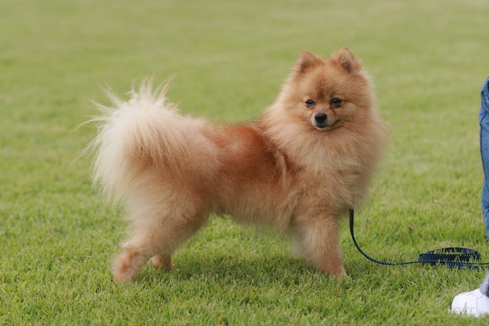
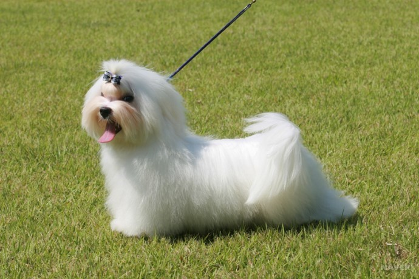
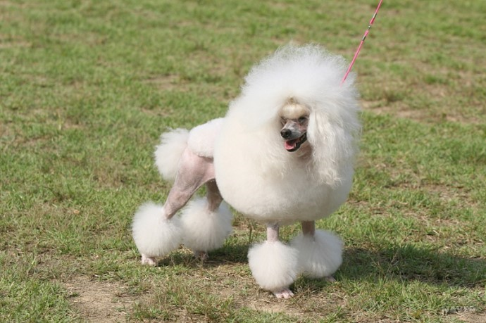
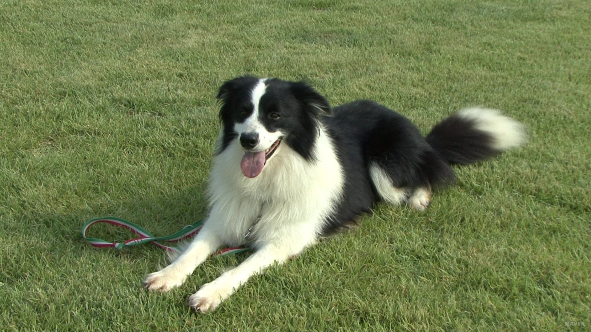
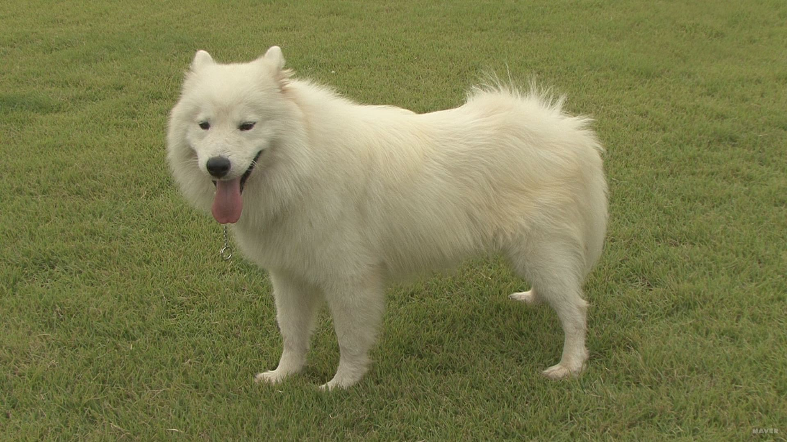

반려견을 선택할 때, 외모나 크기만 보고 판단하는 경우가 많습니다. 하지만 그보다도 중요한건 바로 성격입니다.
사람과 마찬가지로 절대적이진 않지만, 견종에 따라 천성적으로 갖고 있는 성격이 있습니다.
이를 고려하여 자신의 라이프스타일, 거주환경과 맞는 견종을 선택한다면, 더 건강하고 원만한 관계를 유지할 수 있습니다.
아래의 표를 참고하여 자신과 맞는 견종을 선택해봅시다.
| 견종 | 사진 | 크기 | 성격 | 활동량/ 털빠짐 |
|---|---|---|---|---|
| 포메라니안 |  | 소형견 | 영리하고 호기심과 애교가 많음 욕심 많고 고집이 셈 체구에 비해 대범함 잘 흥분하고 짖는 편 |
|
| 말티즈 |  | 소형견 | 사람들과 친밀하게 지냄 질투와 응석이 많음 몹시 까다로움 |
|
| 미니어쳐 푸들 |  | 중형견 | 깜찍하고 사교적며 애교가 많음 지혜롭고 영리함 훈련에 빠르게 적응함 습득력과 기억력이 좋음 |
|
| 보더콜리 |  | 중형견 | 영특하고 의욕적임 다정하고 사교적임 활력적이고 민첩함 총명하고 판단 능력이 뛰어남 | |
| 사모예드 |  | 대형견 | 총명하고 충직함 동종에 사교적이고 우호적임 타종에 배타적임 생기발랄하고 활달함 | |
| 골든 리트리버 | 대형견 | 건실하고 자신감 있음 친밀하고 애정이 많음 온순하고 느긋하며 쾌활함 공격적이지 않고 영리함 |